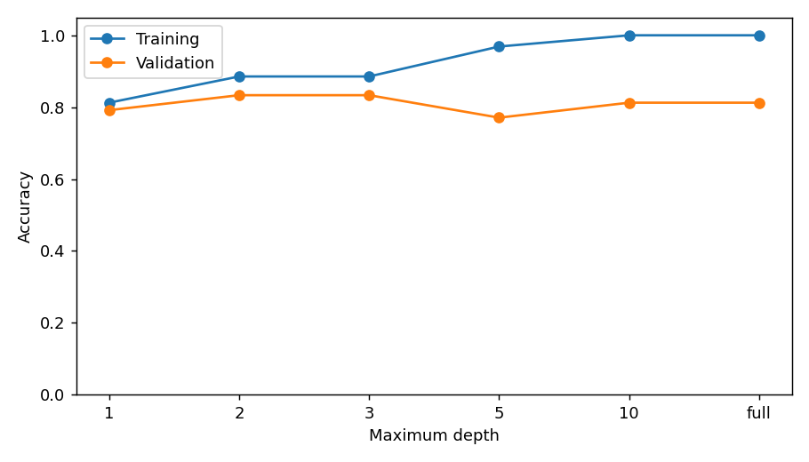

Ting Tan · EEEA · Oct 2026
Measured reference run · fictional classroom data
{
"min_samples_leaf": 1,
"selected_depth": "2",
"selection_rule": "highest validation accuracy; shallower candidate wins a tie",
"baseline_majority_validation_accuracy": 0.5,
"test_accuracy": 0.9166666666666666,
"test_count": 48,
"test_confusion_true_rows_predicted_columns": [
[
23,
1
],
[
3,
21
]
]
}| depth | training_accuracy | validation_accuracy | leaves |
|---|---|---|---|
| 1 | 0.8125 | 0.791667 | 2 |
| 2 | 0.885417 | 0.833333 | 4 |
| 3 | 0.885417 | 0.833333 | 6 |
| 5 | 0.96875 | 0.770833 | 13 |
| 10 | 1.0 | 0.8125 | 18 |
| full | 1.0 | 0.8125 | 18 |

{'python': '3.8.20', 'numpy': '1.24.4', 'sklearn': '1.3.2', 'matplotlib': '3.7.4'}